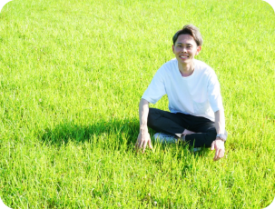
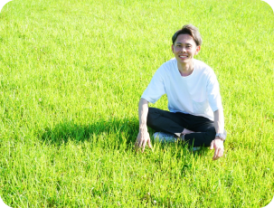

首藤裕貴（すどうゆうき）
1992年、福岡市西区生まれ。
趣味
サッカー、ゴルフ、料理
お酒（特に日本酒）、花を見に行くこと
経歴
高校卒業→医療系専門学校に入学
→整骨院に10年勤務
→WEBデザイナーのスクール
に通い現在に至る
専門学校卒業後はスポーツをしている方だけではなく
若い方から高齢者まで幅広い方のお身体のケアを
させて頂くために整骨院に勤めました。
２院の整骨院でお世話になり、その後、
専門学校の同期と一緒に独立をし院長として現場
に立たせて頂きました。
下積み時代では、お身体に関することはもちろんのこと、
精神面や人としての考え方など様々なことを
学ばせて頂きました。
院長として現場に立った際にこの下積み時代が役に
立ったなと思う場面がたくさんありました。
以前勤めていた整骨院がWEBに力を入れていたこともありホームページの内容や
院内のPOPのデザインを立案、作成することが多々ありました。
そんな時に以前勤めていた整骨院の院長から
「WEB業界とか興味ないの？そういうのを考えてる時の顔すごい楽しそうにしてるよね」
と言われ、「確かにこの作業やってる時、楽しみながらやってるなぁ」と思いました。
それから真剣にこの業界について考えどうせ仕事としてやっていくなら独学じゃなく
しっかり学びたいと思い思い切ってオンラインスクールに入学し、
学び本格的にこの業界で働いてみたいと思い今に至りました。
 

全くの畑違いの分野からですが、そういう意味では
私にしか出せない色があると思っています。
この仕事を通して皆様とつながり、
喜んでいただけるよう精進していきたいと思います。